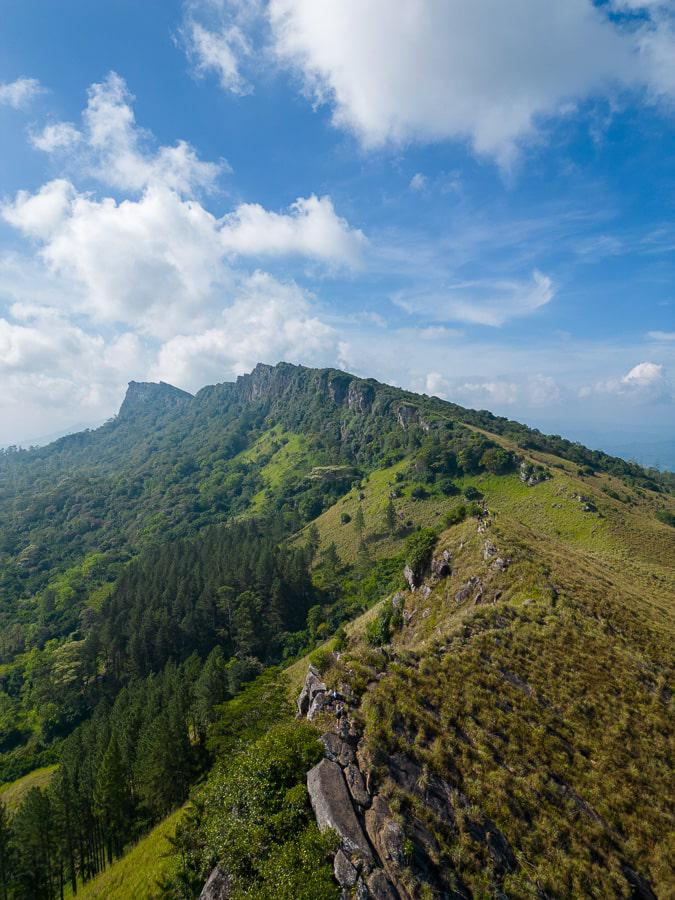

Adventure Tour
Duration: 7 Days
Thrilling adventures in Sri Lanka's mountains, forests, and rivers. Includes hiking, white-water rafting, and wildlife exploration.
Itinerary
- Day 1: Arrival and transfer to Kandy, evening cultural show.
- Day 2: Hiking in the Knuckles Mountain Range, nature photography.
- Day 3: Visit Horton Plains National Park and hike to World’s End viewpoint.
- Day 4: White-water rafting adventure on the Kelani River.
- Day 5: Safari in Udawalawe National Park to see elephants and other wildlife.
- Day 6: Trekking in Sinharaja Forest Reserve, bird watching.
- Day 7: Relaxation and departure or optional city tour in Colombo.
Adventure Activities
- Mountain hiking with experienced guides.
- Exciting white-water rafting for beginners and experts.
- Wildlife safaris to spot elephants, leopards, and exotic birds.
- Forest trekking and nature walks through Sri Lanka’s biodiversity hotspots.
Packing Tips
- Comfortable hiking shoes and lightweight clothing.
- Waterproof jacket and quick-dry clothes for rafting.
- Insect repellent and sunscreen.
- Binoculars and camera for wildlife spotting.
Gallery

Book This Adventure
Back to Home